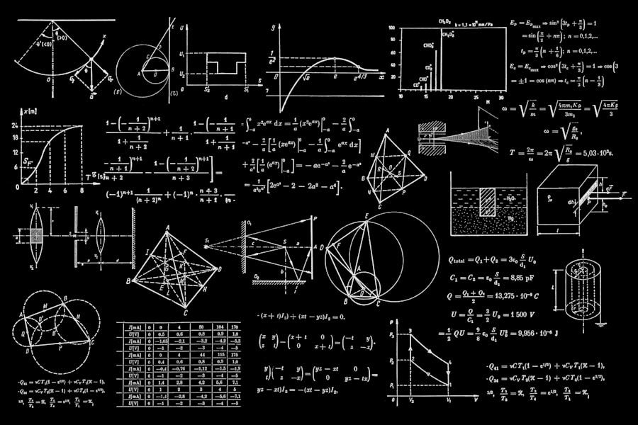
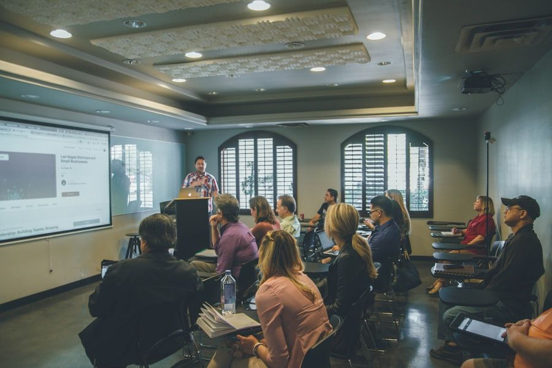

Transforming Mathematical Anxiety into Quantitative Fluency
Beyond mechanical memorization and repetitive arithmetic drills. NumeracyBoost engineers structural conceptual intuition using the Concrete-Representational-Abstract (CRA) framework, working-memory optimization, and adaptive cognitive diagnostic telemetry.
The Four Pillars of Quantitative Intuition
Mathematical expertise is not an innate genetic predisposition, but a systematic cognitive architecture built upon four fundamental neurological pillars.
Perceptual Subitizing
Training the parietal cortex to instantly recognize numerical cardinality without serial counting, building instantaneous rapid number-sense and quantity estimation.
Spatial-Geometric Cognition
Translating numerical magnitude into dynamic spatial coordinate vectors, geometric symmetries, and mental coordinate planes that unlock algebraic intuition.

Structural Invariance
Decoupling mathematical relationships from superficial surface context. Students grasp relational equality, balance properties, and algebraic commutativity.
Bayesian Probabilistic Sense
Cultivating probabilistic intuition under real-world uncertainty. Scholars evaluate evidence updates, proportional scaling, and risk estimation without cognitive fallacies.
The Concrete-Representational-Abstract (CRA) Pipeline
Developed by cognitive psychologists, our three-tier instructional progression guarantees that abstract algebraic notation is permanently grounded in physical reality.
Concrete Sensory Modeling
Students manipulate physical base-ten blocks, balance beams, and geometric manipulatives to experience arithmetic operations as physical mass, volume, and translation.
Representational Schematics
Physical actions translate into visual bar models, tape diagrams, and area grids. Students visualize hidden algebraic relationships before writing a single equation.
Abstract Symbolic Fluency
With deep visual scaffolding established, scholars transition smoothly to symbolic polynomial manipulation, calculus derivatives, and formal axiomatic proofs with zero cognitive fatigue.
Quantitative Curriculum & Benchmark Taxonomy
Explore how our progressive instructional milestones scaffold mathematical capability from early foundational numeracy to advanced competitive Olympiad problem solving.
| Curricular Tier | Cognitive Focus Area | Dominant Pedagogical Tool | Diagnostic Fluency Target | Real-World Analytical Competency |
|---|---|---|---|---|
| Tier I: Foundational (K-3) | Subitizing & Ten-Frame Decomposition | Cuisenaire Rods & Dot Arrays | Mental add/sub within 20 in < 1.2s | Intuitive quantity estimation and conservation |
| Tier II: Intermediate (Grades 4-6) | Multiplicative Reasoning & Fractional Scaling | Singapore Bar Models & Grid Arrays | Fractional equivalence mapping > 95% | Proportional reasoning and unit rate scaling |
| Tier III: Pre-Algebra (Grades 7-8) | Relational Invariance & Linear Functions | Dynamic Balance Equations & Graphs | Multi-step equation modeling < 45s | Algorithmic problem structuring and linear analysis |
| Tier IV: Advanced (High School) | Nonlinear Polynomials & Coordinate Geometry | Parametric Visualizers & Proof Scaffolds | Geometric proof verification accuracy > 92% | Optimization modeling and spatial trigonometry |
| Tier V: Olympiad & Calculus | Combinatorics, Number Theory & Limits | Axiomatic Problem Decomposition | Complex heuristic synthesis > 88% | Stochastic modeling, calculus proofs, competition heuristics |
Tailored Learning Pathways for Every Quantitative Goal
Whether rebuilding foundational confidence or preparing for national mathematics olympiads, our targeted curricula provide structured excellence.

Foundational Recovery & Fluency
Designed for students experiencing math anxiety or computational bottlenecks. We deconstruct arithmetic into intuitive tactile patterns, eliminating dread and building unshakable core confidence.
Honors STEM & AP Calculus Mastery
An accelerated curriculum for middle and high school students targeting AP Calculus AB/BC, AP Statistics, and college-level discrete mathematics with emphasis on conceptual derivations.
Olympiad & Competitive Heuristics
Rigorous masterclasses focusing on AMC 8/10/12, AIME, and MathCounts. Scholars learn non-routine problem decomposition, invariant principles, and creative combinatoric proofs.
Pinpointing Cognitive Bottlenecks in Milliseconds
Conventional mathematics tests merely mark answers right or wrong, completely missing the underlying neural mechanism of student error. Did the student fail due to working memory overload, flawed fractional schema, or calculation fatigue?
NumeracyBoost's proprietary diagnostic engine analyzes response latencies, intermediate keystroke modifications, and step-by-step scrapings to generate a multidimensional cognitive knowledge heatmap.
Educators and parents receive actionable diagnostic breakdowns detailing exact conceptual prerequisites that require reinforcement before moving forward.
Validated by Psychometric Research & Classroom Trials
Our quantitative pedagogy has been independently evaluated across public school districts and private tutoring networks with statistically verified outcomes.
Standardized Math Percentile Gain
Average national standardized percentile improvement achieved by students completing 16 weeks of structured CRA module instruction.
Reduction in Math Anxiety
Measurable drop in physiological stress markers and self-reported math apprehension through progressive scaffolding and error-normalization protocols.
Greater Problem Solving Persistence
Scholars exhibited over quadruple the time dedicated to unassisted non-routine problem solving before seeking hints or abandoning challenging tasks.
Perspectives from Mathematics Educators
Read how leading department chairs, cognitive researchers, and Olympiad coaches describe the impact of NumeracyBoost on student understanding.
"NumeracyBoost has achieved what traditional textbooks fail to accomplish: making abstract algebraic structure visible. The transition from bar modeling to polynomial factoring is seamless and intuitive."
"My seventh-grade students walked in dreading fractions and negative numbers. Within ten weeks of the CRA framework, they were confidently debating algebraic inequalities at the whiteboard."
"The Olympiad heuristic series teaches deep problem decomposition rather than rote formula memorization. It is the gold standard for aspiring competitive math scholars."
Frequently Asked Questions
Key details regarding curriculum alignment, diagnostic assessment protocols, and individualized pacing.
Unlock Your Scholar's Quantitative Potential
Empower your student with the spatial intuition, structural problem-solving mastery, and mathematical confidence needed for 21st-century STEM leadership.